America is full of mysteries. Most of which were plowed under, misidentified, or buried in local Indian lore. As a young boy, my friends and I would explore the local library, and talk to the old timers in our town and learn the lore of our region. Yes. Stuff that you wouldn’t be able to find in any school history books.
Let’s look at one of these interesting mysteries of America.
Whilst it was generally believed that Columbus was the first European to discover America in 1492, it is now well known that Viking explorers reached parts of the east coast of Canada around 1100 and that Icelandic Leif Erikson’s Vinland may have been an area that is now part of the United States.
What is less well known is that a Welshman may have followed in Erikson’s footsteps, this time bringing settlers with him to Mobile Bay in modern day Alabama.
According to Welsh legend, that man was Prince Madog (Madoc) ab Owain Gwynedd.
There are apparently two Madocs. One left for America around 600 AD and the other left for America around 1100 AD. This article discusses the second Merdoc, the one that left around 1100 AD.
A Poem gives us a hint.
A Welsh poem of the 15th century tells how Prince Madoc sailed away in 10 ships and discovered America.
The account of the discovery of America by a Welsh prince, whether truth or myth, was apparently used by Queen Elizabeth I as evidence to the British claim to America during its territorial struggles with Spain.
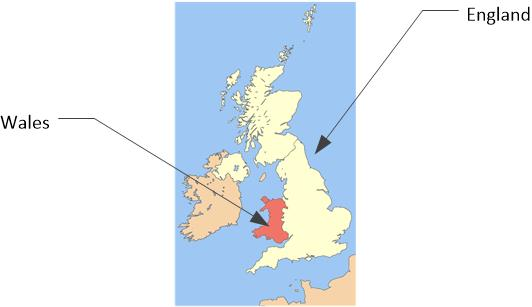
So, we have to ask ourselves, just who was this Welsh Prince and did he really discover America before Columbus?
My Discovery
It’s an average day. Maybe a little overcast. A little warmer than I would like. Same old, dame old. So I get up and make a brunch.
So, I’m minding my own business eating a chicken salad sandwich on wheat bread and drinking (room temperature) flower tea (not beer), when I come across this on the internet…
History and legend have it that MADOC, a son of King Owain of Gwynedd, is claimed not only to have discovered America in 1170, but also to have formed a tribe on the upper Missouri. This tribe fuelled tales of fair-haired Indians, living in round huts and using round coracle-like boats, both of which were common in Wales, but unheard of in America at the time. They were also said to speak a language similar to Welsh. Owain Gwynedd, ruler of North Wales in the twelfth century, had nineteen children, six of whom were legitimate. MADOC, one of the bastard sons, was born in a castle at Dolwyddelan, a village at the head of the Lledr valley between Betws-y-Coed and Blaenau Ffestiniog. On the death of Owain Gwynedd in December 1169, the brothers fought amongst themselves for the right to rule Gwynedd. MADOC, although being brave and adventurous, was a man of peace. He and his brother, Riryd, left the quay on the Afon (River) Ganol at Aber-Kerrik-Gwynan, on the North Wales Coast (now Rhos-on-Sea) in two ships, the Gorn Gwynant and the Pedr Sant. They sailed west, leaving the coast of Ireland 'farre north' and landed in Mobile Bay, in what we now know as Alabama in the United States of America. They liked the country so much that one of the ships returned to Wales to collect more adventurers, and in 1170AD, ten small ships assembled off Lundy Island in the Bristol Channel, which flows between South Wales and Southern England. On arrival in America, they sailed from Mobile Bay up the great river systems, settling initially in the Georgia//Tennessee/Kentucky area where they built stone forts. They warred with the local Indian tribe, the Cheyenne. When they decided to return down river in some time after 1186, they built big boats but they were ambushed trying to negotiate the falls on the Ohio River (where Louisville, Kentucky now stands). A fierce battle took place lasting several days. A truce was eventually called and, after an exchange of prisoners, it was agreed that MADOC and his followers would depart the area never to return. They sailed down river to the Mississippi, which they sailed up until the junction with the Missouri, which they then followed upstream. They settled and integrated with a powerful tribe living on the banks of the Missouri called Mandans. In 1781-82, the white man's gift, smallpox, reduced the Mandans, a tribe of 40,000 people, down to 2,000 survivors. They partially recovered, increasing their numbers to some 12,000 by 1837, when a similar epidemic almost wiped the tribe out completely. It is recorded that there were only 39 survivors but the Mandan-Hidatsa claim it was about 200. These bewildered survivors of a once mighty tribe were taken in by the Hidatsa who had also been affected by the disease but to a much lesser extent. It is this background which over the centuries has fueled tales of a tribe of fair-haired Indians, living in round huts and using round, coracle-like boats - both of which were common in Wales but unheard of in America at the time. The tribe were also said to speak in a language similar to Welsh. As we know many people including the Phonicians, St Brendan and the Vikings discovered North America before the Spanish in the 15th century. This story is fascinating and there is a lot of evidence to back it up.
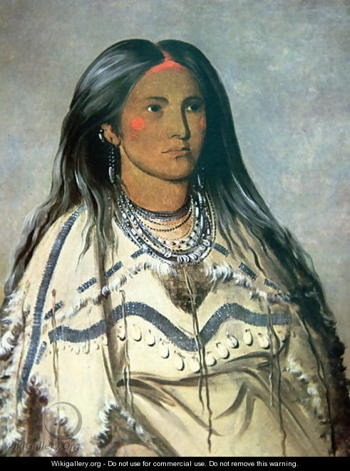
First explorations…
Well, after reading that piece, it seems that some crazy things happened out in the Americas around 1100 AD.
- A Welsh expedition of ten ships (perhaps, the number varies from two ships to two hundred ships) sailed to America from Wales, England.
- Some reports state that they landed in Middle America first, before moving up the gulf to Alabama.
- They reached what is now known as Mobile, Alabama. They stayed a short spell, and then moved up river.
Dauphin Island is a narrow strip of land extending from the southernmost point of Mobile County. On a modern map, it has the shape of a fish. The island is 15 miles long and is located 30 miles from Mobile. It is connected to the mainland by a concrete and steel bridge, which was built after the original bridge constructed in 1955 was heavily damaged in Hurricane Frederic in 1979. Dauphin Island was first known as Massacre Island to the French explorers because they found large piles of human bones there. -Dauphin Island History
- The traveled up the rivers there and formed colonies deep inside of America.
- The created colonies that merged with the local Indians there.
- They left a legacy of Welsh-Indian language, fair skinned, beautiful women, round Welsh-style houses, and Welsh-style boats.
- They settled (initially) in the Georgia/Tennessee/Kentucky area.
- They settled there. Established a main colony.
- They then constructed enormous stone forts there.
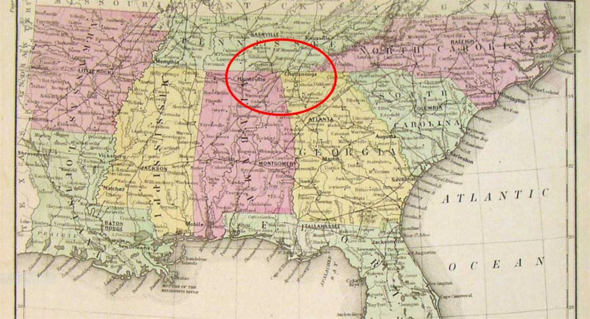
The Forts
One of the “forts” said to have been built by Prince Madoc and his followers is located at Fort Mountain State Park in Georgia.
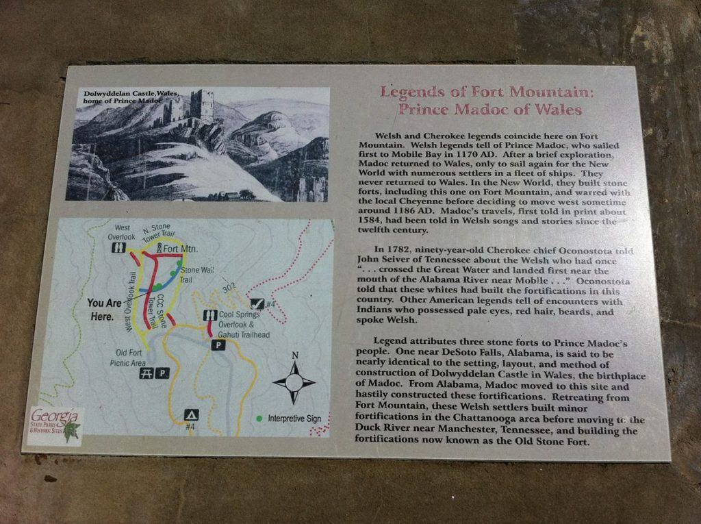
This fort is located in the Chattahoochee National Forest close to the Cohutta Wilderness area, in North Georgia. It is a most beautiful area, let me tell you.
Great hiking. Wonderful weather. Lot’s of history. You all should check it out.
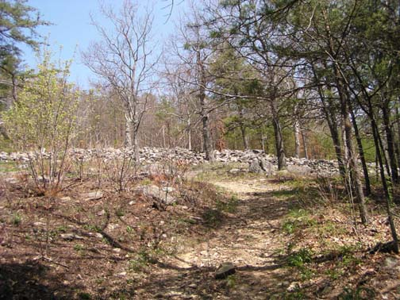
Some authorities feel certain this wall was built Prince Madoc and his followers as a defensive structure. I mean, just look at all the stone used in the creation of this edifice. For goodness sakes.
Though, others (you know, the feeble minded, or those that never had to lift and carry a 300 pound rock in their life) argue with that the wall was built by native North American Indians for ascetic reasons.
Ah, what ever you say…

Maybe for superstitious or religious and/or astronomical purposes. Not that they know anything about the religion of the builders, but they do like to sound important and intelligent by adding some “ah’s”, and other “sounds and statements attributed by the learned Ivory-tower types”.
Unfortunately, no artifacts have been found. For further details, please visit Georgia’s Fort Mountain.
Remnants of the forts still stand, however. One of the forts is almost perfectly identical, in terms of setting, layout, and construction, to Madoc’s birthplace, Dolwyddelan Castle in Gwynedd, Wales. Fort Mountain, Georgia, in the Chattahoochee National Forest boasts 800 linear feet of 800-year-old wall in ruins guarding the southern approach to a forbidding crag. And there are actually several of these fort-like structures scattered here and there. Did the Welsh really build them? Was Madoc really the first European to see Gulf shores and the virgin interior of the American South? -Porter Briggs
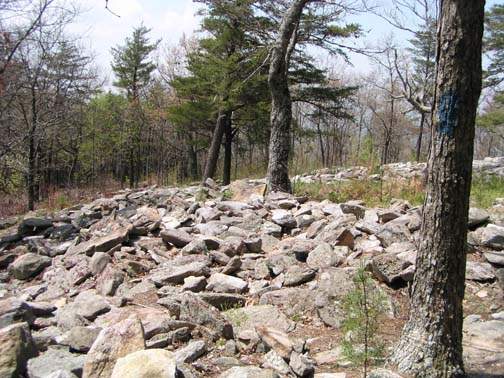
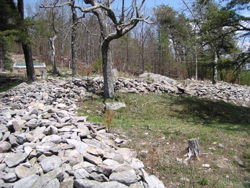
Throughout the 17th and 18th centuries, tales appeared to the effect that various aboriginal tribes of North America spoke a form of ancient Welsh, had pale complexions and blue eyes, cherished ancient relics including Bibles printed in Welsh, built little wicker-framed, hide-covered boats similar to Welsh coracles and Irish curraghs, and so on.
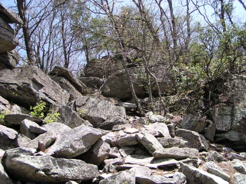
At various times, the Shawnee, Delaware, Conestoga, Comanche, along with least nine more actual tribes and eight imaginary ones were said to have been blue-eyed Welsh-speaking Indians. Eventually, the Mandan of North Dakota became the most favored tribe, possibly because their dwellings, and to an extent their social structure, differed from those of their more nomadic neighbors.
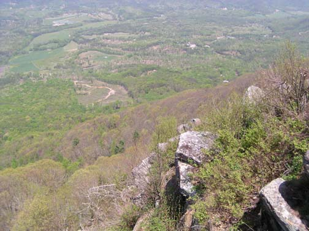
But they were chased away…
- They warred with the local Indian tribe, the Cheyenne.
- The war lasted many days and took place where Louisville, Kentucky now stands.
- They lost, and after an exchange of prisoners left the area. Abandoning their colonies and forts there.
- They went up the Mississippi river, took the Missouri river and settled on it’s banks.
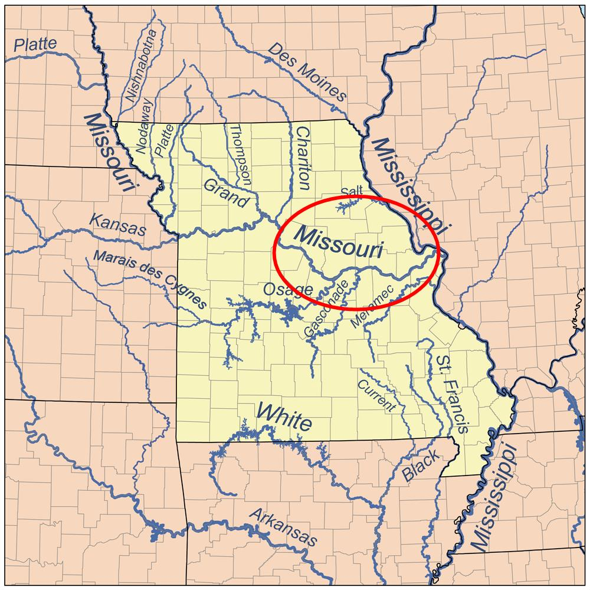
- The Mandan Indians were a large and powerful group that provided them protection and trade.
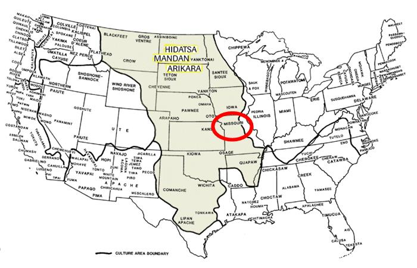
- For around 500 years the Welsh-Indian descendants lived in relative peace.
- Around 1781 smallpox devastated the Indian nations all over the Americas.
- The survivors moved and settled with another Indian tribe further North near the Canadian border; the Hidatsa.

Other reports
Other reports seemingly confirm this narrative.
In 1666 the Rev Morgan Jones, a Welsh missionary in North America, was captured by an Indian tribe with fair features and was about to be killed. But he prayed loudly to God in Welsh for deliverance, and was suddenly spared, treated as an honored guest and found he was able to converse freely in Welsh with the natives. In 1739, a Frenchman, La Verendrye, encountered a tribe of Indians on the Upper Missouri 'Whose Fortifications are not characteristic of the Indians... Most of the women do not have Indian features... The tribe is mixed white and black. The women are fairly good looking, especially the light colored ones; many have blonde or fair hair.' He called them Mantannes. There were many other visitors to the so-called Welsh tribe; one of interest was a Maurice Griffith who was taken prisoner by the Shawnee Indians in 1764. The Indians eventually befriended him and took him on a hunting expedition to seek the source of the Missouri. High in the mountains they came across 'three white men in Indian dress' with whom they traveled for several days until they arrived at a village where there were others of the same tribe, all having the same European complexion. A council of this white Indian tribe decided to put the strangers to death and Griffith decided it was time to speak. He addressed them in the Welsh language explaining that they had no hostile intentions but merely sought the source of the Missouri and that they would return to their own lands satisfied with their discoveries. The Chief of the Tribe greeted them in Welsh and they were thereafter treated as guests, staying with the nation some eight months. Griffiths eventually returned to Virginia but his story aroused little interest. In October 1792, a French fur trader, Jacques d’Eglise, who had set off up the Missouri in August 1790, arrived back in St Louis. He had traveled over 800 leagues from St Louis up the river and had found a mighty and wealthy tribe of Indians, the Mandans. There had been earlier rumors of this remarkable tribe, but no one had ever reached them from St Louis. He said that they were 5,000 strong, living in eight, great fortified villages; they had the finest furs; they lived in sight of a volcano and alongside the Missouri, which at that point flowed from the west or north-west and could take the largest boats. d’Eglise reported that their fortified villages were like cities compared with other native settlements, they were much more civilized than other Indians and the final marvel, these Mandans 'are white like Europeans'. Here at last was confirmation of all those stories of civilized white Indians, which had been filtering back along the Missouri for years. John Sevier, Governor of Tennessee, wrote to a Major Stoddard of the U.S. Army about a discussion he had had with the Major Chief of the Cherokee, Oconostota, in 1792. The venerable old chief informed him that, according to his forefathers, the white people who had formerly inhabited the country had made ancient fortifications on the Highwassee River now called Carolina. A battle took place between the Whites and the Cherokees at the Muscle Shoals on the Tennessee River. After a truce and exchange of prisoners, the Whites agreed to leave the area, never to return, eventually settling 'a great distance' up the Missouri. The Chief's ancestors claimed 'they were a people called Welsh and they had crossed the Great Water'. Governor Sevier also claimed to have been in the company of a Frenchman who informed him that he had been high up the Missouri and 'he had traded with the Welsh tribe; that they certainly spoke much of the Welsh dialect, and though their customs were savage and wild, yet many of them, particularly the females, were very fair and white.'
I truly believe, like the Spanish themselves, that they were not the
first white men to set foot on north American soil and with evidence like this it is easy to see why.
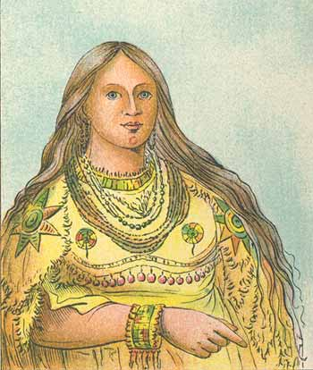
Looking for answers
Preeminent Welsh historians, Alan Wilson and Baram Blackett, have studied this issue in depth. They have amassed a large amount of evidence that supports the long-suppressed idea that the ancient Welsh people traveled to America. Not only that but they explored the North American continent long before the Vikings and Columbus ever set foot on it.
Welsh characterized “Coelbren stones” as well as other credible testimony and evidence have also been found in North America. These items, objects and evidence gives strength to the hypothesis that the ancient Welsh were in America long before Columbus.
Observer after observer commented on the ‘whiteness’ of these Indians. It was this above all, which made them into a people of Myth. Many of them were, without doubt, fair of skin and hair. Their hair was often brown, sometimes red; it turned grey. The men had beards. Their eyes were sometimes blue. The neighbouring tribes, the Hidatsa, the Crows and the Arikara showed similar characteristics, but far less frequently.
History has presented some difficulties in verifying the legend. Although all important events in Welsh life were recorded in the monasteries and abbeys of Wales, most of the records would have been destroyed when Henry VIII dissolved the monasteries between 1537 and 1540 after falling out with the Church in Rome.
The other issue affecting the lack of evidence is that the Mandan Indians, like most such tribes, only have a verbal tradition of their history and that different families are keepers of different parts of the story. With the two smallpox epidemics wiping out large sections of the community with such extreme rapidity, much of their history has been lost.
With regard to the frequency of white physical characteristics, it must be remembered that the Welsh would have only numbered a few hundred amongst a tribe of tens of thousands. Supposedly about 300 men and women left Wales for the New World and if we assume that 200 survived the crossing and the various battles with the Indians, and they were absorbed into a tribe of some 40,000 Mandans, then the best guess is about 5% whites. Even if there were twice as many whites as previously suggested, then they would only number some 10% of the tribe. These would not have been spread evenly throughout the tribe but would have been concentrated in various families and villages.
It seems unlikely that the Mandans were ever a tribe of white Indians, although they had a small percentage of members showing certain European characteristics. The reality of a tribe of white Indians as encountered by the Cherokees probably applied to a group of no more than a few hundred people and is unlikely to have lasted more than a few decades.
Nevertheless, there does appear to be compelling evidence that a group of Welsh people went to America seeking peace, over three hundred years before Columbus, and they were eventually assimilated into a tribe of Indians on the Upper Missouri.
The Mandans, and some of their neighbors, certainly lived in round, earth lodges not dissimilar to those found in Wales. They also used boats similar to the Welsh coracle, a peculiar little craft propelled in an even more peculiar fashion.
If we add to this the undoubted infusion of some Northern European blood resulting in some tribal members having fair skins, fair or red hair and blue, grey or green eyes, then the probability of there being an element of truth in the story must be enormous.
There are also the stories of some Mandans being able to understand the Welsh language and the various tales of the great battles on the falls on the Ohio and Tennessee Rivers. There is the evidence of the stone hill forts in Georgia and Tennessee and the finds of coins, armour and helmets in the region as well as numerous skeletons of non-indigenous peoples
All of this points towards a strong degree of truth to the story of madog.
The lost expedition.
Several centuries before Columbus sailed to the Americas, a Welsh prince named Madoc departed Wales to explore the oceans. He departed with ten ships and went West with a dream of discovering a new land.
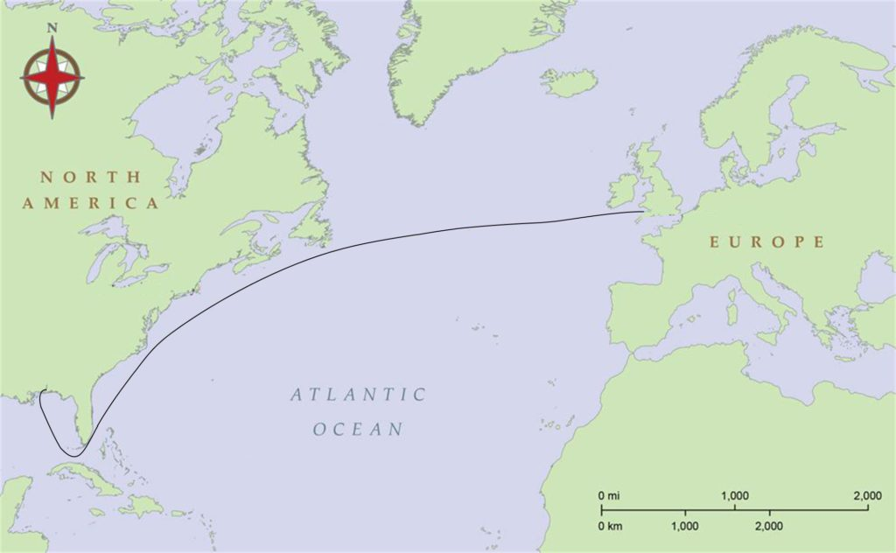
Madoc the explorer.
Madoc was the son of King Owain Gwynedd.
Now, King Owain, being a king, fathered many children. Being a king in those days was sort of like being the cross between a Rock Star, and Bill Gates. So he could have just about any lady that he fancied, and so he took advantage of this “perk of the office”.
Owain Gwynedd, king of Gwynedd in the 12th century, had nineteen children, only six of whom were legitimate.
Madog (Madoc), one of the many, many illegitimate sons, was born at Dolwyddelan Castle in the Lledr valley between Betws-y-Coed and Blaenau Ffestiniog.
On the death of the king in December 1169, the brothers fought amongst themselves for the right to rule Gwynedd. Madog, although brave and adventurous, was also a man of peace. In 1170 he and his brother, Riryd, sailed from Aber-Kerrik-Gwynan on the North Wales Coast (now Rhos-on-Sea) in two ships, the Gorn Gwynant and the Pedr Sant. They sailed west and are said to have landed in what is now Alabama in the USA.
Prince Madog then returned to Wales with great tales of his adventures and persuaded others to return to America with him. They sailed from Lundy Island in 1171, but were never heard of again.
They are believed to have landed at Mobile Bay, Alabama and then travelled up the Alabama River along which there are several stone forts, said by the local Cherokee tribes to have been constructed by “White People”. These structures have been dated to several hundred years before the arrival of Columbus and are said to be of a similar design to Dolwyddelan Castle in North Wales.
Early explorers and pioneers found evidence of possible Welsh influence among the native tribes of America along the Tennessee and Missouri Rivers. In the 18th century one local tribe was discovered that seemed different to all the others that had been encountered before.
Called the Mandans this tribe were described as white men with forts, towns and permanent villages laid out in streets and squares. They claimed ancestry with the Welsh and spoke a language remarkably similar to it.
Instead of canoes, Mandans fished from coracles, an ancient type of boat still found in Wales today. It was also observed that unlike members of other tribes, these people grew white-haired with age.
Collecting proof.
Wilson and Blackett (English historians) have spent much time in the USA with American historians, collecting considerable evidence and visiting sites of interest.
Evidence of Welsh speaking native Americans is numerous and far more common than what we have perhaps been led to believe, with books and historical records suggesting that this hypothesis cannot now be disregarded.
- King Arthur II, claims Wilson, was killed in a battle with Native American tribes in what is today known as Kentucky and his body sent home to Britain.
- In 1824, Thomas S Hinde, of the prominent Hinde family, wrote to John S. Williams, editor of The American Pioneer, regarding the Madog tradition. In the letter (pages 373-376) Hinde claimed to have gathered testimony from numerous sources that stated that in 1799, six soldiers had been dug up near Jeffersonville, Indiana, on the Ohio river with breastplates that contained Welsh coat-of-arms. He also gives several references to Welsh and Welsh-speaking Indians. The present-day location of the breast plates are unknown.
- Reuben T. Durrett’s book ‘Traditions of the Earliest Visits of Foreigners to North America’ published in 1908 has an incredible amount of references to the Welsh Indians.
- As does ‘The Rev Morgan Jones and the Welsh Indians of Virginia‘ published in 1898, and ‘The biography of Francis Lewis and Rev Morgan Jones’ written by Lewis’ granddaughter Julia Delafield and published in 1877.
Suppression of History
The establishment historians have done a very good job suppressing the true history of North America. And at the same time promoting the fake history that we are all taught in school.
You know the one. That tired and nonsensical narrative that no one knew how to make boats. Thus the ONLY way for humans to populate the various continents was through walking on foot, and over ice.
Yup.
Instead, the “Native American Indians” first crossed the Bering Sea from Asia into Alaska, then migrated down into North and South America. Then (out of the blue) the White man showed up around 1500 and “discovered” America. As such they claimed it for themselves and stole the land from the “natives” and killed the ones who resisted the theft.
To me, it sounds like just another Marxist fairy tale of exploitation written by the usual suspects.
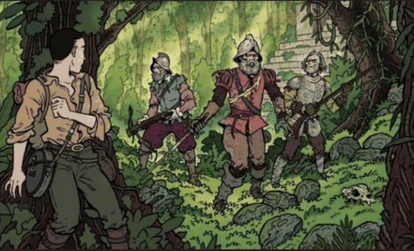
Images of the Lost Welsh Colony
George Catlin, a 19th century painter who spent eight years living among various native American tribes including the Mandans, declared that he had uncovered the descendants of Prince Madog’s expedition.
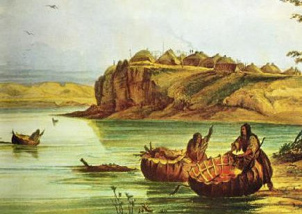
He speculated that the Welshmen had lived among the Mandans for generations, intermarrying until their two cultures became virtually indistinguishable. Some later investigators supported his theory, noting that the Welsh and Mandan languages were so similar that the Mandans easily responded when spoken to in Welsh.
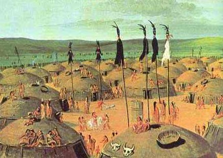
All that remains.
All that remains is a plaque. A plaque was placed alongside Mobile Bay in 1953 by the Daughters of the American Revolution.
“In memory of Prince Madog,” the inscription reads, “a Welsh explorer who landed on the shores of Mobile Bay in 1170 and left behind, with the Indians, the Welsh language.”

But then it was removed…
Storm over missing Madoc plaque Alabama: The Alabama Welsh Society is petitioning Mobile's mayor to return a monument to Prince Madoc that was removed 20 years ago. Prince Madoc is believed to have landed at Mobile Bay in 1170 after he and his brother sailed from Wales following the death of their father, Owain Gwynedd. While there is much speculation about Madoc, his legacy is still strong in America where he and his group are believed to have settled among a Native American tribe. The plaque in question was placed near Fort Morgan in 1953 by the Daughters of the American Revolution. It read: "Prince Madoc, a Welsh explorer, who landed on the shores of Mobile Bay in 1170 and left behind, with the Indians, the Welsh language." According to Blanton Blankenship, site manager at Fort Morgan. the plaque was removed and placed in storage because Fort Morgan "focuses on the United States military presence. " Alabama Welsh Society: www.alabamawelsh.com
Origins of The Mandan
Engineer and Rhos-on-Sea native Howard Kimberly grew up with the plaque and the legend. Founder of the Madoc International Research Association, Kimberly collaborates with others devoted to the story, whether in America or the British Isles or wherever. His search led him into talks with Ken Lonewolf, a Shawnee “wisdom-keeper” who lives in Pennsylvania.
Lonewolf, whose DNA indicates Welsh ancestry, believes he is descended from the original Madoc-led Welsh settlers. He notes government records of the sale of his ancestral village at the turn of the nineteenth century. The signature on the legal document is that of the last chief of the Shawnee: “Chief White Madoc.” Apparently the name and the legend meant something to the Shawnee as well.
Origins of The Mandan By: Madoc As a direct lineal descendantof Madoc ab Gwynedd, Princeof Wales and alleged founder of the Mandan tribe, I'd like to shove my two cent's worth in... Madoc (or Madog) was born about 1150, one of four sons of the King of Wales. He and his brothers did not get along at all, and after the King died, Wales was divided 4 ways among his children. Madoc chose not to rule his domain directly, having developed the wanderlust that consumes so many Celts. He was a well-regarded sailor, such that his sea-faring exploits were recorded less than 100 years later by a French historian, and again by Dr. John Dee in the 1500's. Madoc is said to have left Wales with 5 ships, and to have arrived in the New World about 1172 or '73. He landed twice, once in Central America, where he is alleged to have been the "God" that the locals later mistook Cortez for. He then backtracked through the Gulf of Mexico and landed around New Orleans. He packed his men and equipment up the Mississippi, finally stopping due to sickness in his men. He and his able-bodied crew floated back downriver and returned to Wales. Madoc left Wales again around 1176, and returned to the Mississippi river. He supposedly found that his surviving original crew had intermarried with the local Native American populations, and most chose not to return to Wales. Madoc himself may have stayed, as there is no record of his returning to Wales again. Years later, Lewis and Clark heard fantastic tales of "white Indians" who supposedly built forts, spoke Welsh, and fished from "coracles," which are leather boats totally unlike canoes. They were unable to substantiate those claims, although they found many "light-skinned" Native Americans, some of whom had blue eyes and blond or blondish hair and spoke a mish-mash of Souix and something that resembled Welsh in some aspects. These people claimed, unlike their compatriots, that they were descended of a "race of giants" who built their tipis of logs and came from "across the sea" (a sea which they had never seen, by the way) and whose leader (Madoc?) had promised to return for them one day. The local Native Americans whom they lived with supported their claims. The Mandan as a tribe still exist. They speak Souix and live mostly on reservation land in Wisconsin and up into Canada. They traditionally build log cabins and fish from leather coracles. The Mandan claim that they were separated as an independent tribe because of disease and wars with settlers. They have largely become Souix, and the US government lists the Mandan as Souix. My family traces its roots directly to Madoc through Ireland, where his offspring settled after being evicted from Wales by the British. As the King of England said at the time, "They can go to Hell or go to Connaught." My father is the direct lineal descendant of the Crown, and I am his first-born (and only) son. My father is the legitimate Prince of Wales, and Charles is a Pretender.
Conclusion
This story is typical and should be an example of how colorful the human experience is. People! Life doesn’t fit into nice compartmentalized boxes, it is complex and tied together with so many other aspects of the human experience and our universe.
If there is one thing that I would advise, it would be for you, the reader, to visit your local historical society and explore and poke around a little. Meet the people there, and talk to them. Listen to their stories, and learn a little bit more about the place where you and your family live. It will give you understanding and perspective. As well as being entertaining.
These historical societies are everywhere and can be found in the smallest of towns, like in Erie, or in Kittanning. You all should go and take a visit to them. You will not be disappointed.
![The Hagen History Center on West 6th Street in downtown Erie, PA is the headquarters of the Erie County Historical Society. Housed in the historic Watson-Curtze Mansion, the History Center includes a regional history museum, research library, archives, and gift shop. The building was built in 1891 and is listed on the National Historic Register. It has been a museum since 1941. The museum features a permanent collection of Victorian era home decor, as well as temporary exhibits on local and regional history.](../assets/img/the-mystery-of-the-lost-madoc-expedition/HagenHistoryCenter2015__ResizedImageWzYwMCwzMzhd.jpg)
Our world is colorful. Do not fall for the progressive narrative where everything fits into nice orderly boxes, and all our problems will be resolved if we give all of our money to the “experts” to solve those problems.
It’s all a big money-making sham.
![“Attractions at the Armstrong County Historical Society and Genealogical Museum” Reviewed April 9, 2015 The house was built in 1842 and houses many rooms. The second floor has theme rooms of Military and Native American and also displays a sewing room and master and child room. The main floor boasts a parlor, dining, kitchen, pantry and McConnell Hall where the displays change yearly. A tour guide walks with you and relates the history of the magnificent home. Next door is what was once the Carriage House where the local genealogical library is now housed with many books of local history and local family history. The helpers are fantastic and do research while you are there or you can contact them via mail.](../assets/img/the-mystery-of-the-lost-madoc-expedition/20160412-131316-largejpg.jpg)
Comments
Hi, and thanks to the Blind King of Bohemia for posting the interesting story of Prince Madoc and the finding of America. I'm an archaeological scientist with both North American and European experience, and a long interest in history. I've read about Madoc before and, based on what little I've been able to fathom, the story has not been shown (at least yet) to be false. In recent years, much has been delved into on the notion of the Eurpoean exploration/finding of America, and some scholars have even suggested that prehistoric eskimos or their like had manage to navigate coastal waters of an ice-locked shoreline that may have developed in the North Atlantic during the last Ice Age. They even go as far as to suggest that some or many eastern American Indian tribes were descended from these prehistoric explorers, rather than coming solely from Asia, as the standard model gives it. This would explain some unusual European-like stone age artifacts and (disputed) dating that (at around 14000yrs) would be too awkwardly early for people to have crossed from the west (roughly 13000yrs ago). This may explain some of the European-like traits seen in eastern American Indian tribes by some 17th-18th century explorers, rather than being due to Madoc. But all these notions are, though possible, unproven. However, up until recently, the Vikings' Vinland Sagas (wherein they related their wonderful tale of going to North America - please read it!) were thought, like the story of Madoc, to be the stuff of fairy tales, but we now have physical evidence of at least one Viking settlement in Canada, at L'Anse aux Meadows, as well as, of course, three towns and 450 farms in Western Greenland (yes, Western - the side closest to Canada), which was settled in the 11th Century. This is important, because the viking sagas also mention that they encountered Welsh or Irish monks on their travels, which serves no purpose to embelishing the sagas (such as boldy going where no man went before etc), nor does it help in claiming new territories. We know that there were seafaring monks in the North Atlantic by this time, and that at least the Irish were recognised as excellent boat builders by the vikings. Indeed, the sagas suggest that when they set off west for Vinland, as previously with Iceland, that they'd already been told of these places by those same monks. And we know that by the 14th Century, long before Columbus, the North Atlantic was already a busy place, with long-established shipping and fishing routes between Scandinavia, the British Isles, Iceland and Greenland (and yes, at least one village in Canada!), before the 300yr-old Greenland community collapsed, succumbing to worsening climatic conditions. All the history of which leads us to consider that Madoc's earlier journey now at least seems less fantastical, even if we still have no proof, and certainly, America itself (at least, that is, the east coast of Canada) was no secret to the later North Atlantic wayfarers of the 11th-14th centuries. After the "Little Ice Age" finished off the Greenland community, and generally worsened conditions for any northern trans-atlantic travel, "the knowledge" was not entirely lost, and by the 1470s at the latest, there are records of Bristol fishing ships traveling back to those old haunts and their known rich cod-fishing grounds off of what we now call Cape Cod. In 1496, John Cabot (Giovanni Cabotti, a Genoese merchant sailor who settled in Bristol, England), sailed from Bristol to find, circumnavigate, map and name Newfoundland. He was therefore yet another man to officially reach the North American mainland before Columbus (remember, in 1492, Columbus actually found Cuba, and even then, and for year afterwards, was convinced it was an outlying island of India - hence the term the West Indies). Anyway, Cabot's journey is important for another reason. He sailed from Bristol, the fishing community of which, along with a few shipping communities from Ireland, had long retained their old commercial "secret" of the abundant fishing grounds off of Cape Cod (in Massachussetts) and safe-harbours visited to the north. Clearly, these sailors had retained the knowledge of their earlier generations' explorations. Cabot soon got wind of this and applied to the Sheriff of Bristol, Richard Americk, for funds to explore, map and name these lands for the British crown and get Bristol officially established there first. Yes, Americk, twice Sheriff of Bristol, is the man whose surname gives us the name America. Unfortunately, nobody in America cares to learn about him, and the "mystery" as to the origin of the name "America" goes on. Americk, by the way, is a rare name, and came about because he was Welsh, born as Rhys ap Meyrick, in Monmouth, but Anglicised his name to Richard Americk when he moved to Bristol. Americk funded Cabot's journeys. To Americk, Prince Madoc may have been a proud historical Welsh fact rather than a modern fantasy. And Cabot's Bristol-born son, Sebastian Cabot, continued the work. Between 1500 and 1507 Sebastian Cabot was the first to navigate and accurately chart the entire coastline of Brazil. So there you go, the North Atlantic was a pretty busy place before Columbus. By the way, Brutus, the notion about Quetzalcoatl bringing farming and housing to Mexico is misplaced. Growing crops in Mexico was established at least a thousand years before his time, as was housing etc. However, I do have one last interesting point to raise, regarding traces of the Welsh in America. An archaeologist friend of mine was working with a Blackfoot group in Canada, a couple of decades ago (long before she or I had ever heard of Madoc), cataloging and restoring tribal relics at the Glenbow Museum. She was told by an elder, in response to some quandary over conflicting ancestor descriptions given in transcriptions of taped oral histories, that traditionally, the founding father of their particular tribe was described, in the tradition passed down to him, as a white-faced man, but that during the conflicts with white settlers in the 19th century, this had become a problematic issue. And he said that certainly, by the mid twentieth century, this description had become disputed within the tribe or at least politically incorrect for many younger tribal members keen to assert their rights as first nation Americans. And that nowadays, this father spirit is depicted as an American-Indian looking man. -Streety
I just completed a book about Madoc et al, entitled Graves of the Golden Bear; Ancient Monuments and Fortresses of the Ohio Valley. It will be on Amazon Kindle, Barnes & Noble, and Smashwords by October 15th. One hint: The 1170 date is a different Madoc /Madog/Maddaug than the one in America. He was much earlier. Streety, if you're still around, have you ever read Alan Wilson's take on the chronicles? - RickOsmon
Other mysteries
Here are some OOPARTS explained through my eyes while I was associated within MAJestic. In all cases the discussions are based on what I was exposed to. Most of which is considered to be fringe and “tin hat” stuff. Whatever. Enjoy.


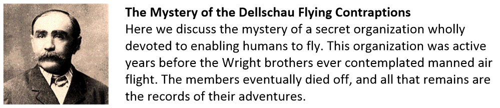